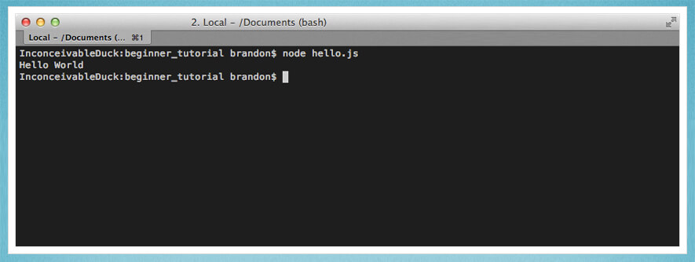
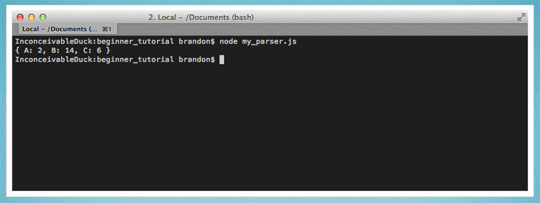

Руководство для начинающих в Node.js
Автором было замечено множество комментариев в духе “я скачал/скачала Node.js, и что теперь?”. Этот урок отвечает на данный вопрос и объясняет новичку, с чего начать.
Очень много путаницы у новичков из-за непонимания того, что такое Node.js. И даже описание с официального сайта не помощник.
Важную вещь, которую нужно осознать — Node не является веб-сервером. Сама по себе платформа ничего не делает. Она не работает как Apache. Нет конфигурационных файлов, в которых она указывает вам на HTML-файлы. Если вы хотите, чтобы платформа была HTTP-сервером, вам придётся написать HTTP-сервер (с помощью встроенных библиотек).
Node.js — это просто другой способ выполнять код на вашем компьютере. Это среда выполнения языка JavaScript.
Node.js легко установить. Достаточно зайти на страницу загрузки официального сайта.
После установки у вас появилась новая команда в командной строке “node”. Вы можете использовать Node двумя способами.
В этом примере я просто набрал “console.log(‘Hello World’);” и нажал на Enter. Node начнет выполнять, и мы увидим наше сообщение. Также он напишет “undefined”, потому что печатает возвращаемое значение, иconsole.log не возвращает ничего. — Другой способ использования Node.js — это создание файла Javascript.
Итак, создаем файл:
|
1 2 |
И сохраняем его в директорию, из которой будем запускать этот файл. Чтобы перейти достаточно в командной строке написать cd полное_название_директории (ну или можно использовать относительную адресацию, о которой можно почитать здесь.
Запускаем в командной строке:
|
1 2 3 |

В данном случае мы переместили сообщение файла console.log и отправили этот файл команде node как аргумент. Node запускает код JavaScript в файле и распечатывает “Hello World”.
Запуск чистого JavaScript — это здорово, но не очень полезно. Поэтому в Node.js есть огромное количество библиотек (модулей) для того, чтобы делать реальные вещи. В данном примере мы откроем файл с записями и будем его обрабатывать.
2013-08-09T13:50:33.166Z A 22013-08-09T13:51:33.166Z B 12013-08-09T13:52:33.166Z C 62013-08-09T13:53:33.166Z B 82013-08-09T13:54:33.166Z B 5
|
1 2 3 4 5 6 |
Что означает этот файл, не так важно, но нужно знать, что каждая запись содержит дату, букву и значение. Мы хотим соотнести каждую букву с соответствующим значением.
Нам нужно считать содержание файла.
// Загружаем модуль файловой системыvar fs = require('fs');// Считываем содержание файла в памятьfs.readFile('example_log.txt', function (err, logData) { // Если возникла ошибка, мы кидаем исключение // и программа заканчивается if (err) throw err; // logData это объект типа Buffer, переводим в строку var text = logData.toString();});
К счастью, Node.js сильно облегчает обработку содержания файла с помощью встроенного модуля filesystem (fs). Модуль fs имеет функцию readFile, которая берёт путь к файлу и обратный вызов. Обратный вызов будет исполнен, когда файл будет полностью прочитан. Данные файла попадают в форме типа Buffer, что является набором битов. Мы можем конвертировать в строку с помощью функции toString()
Теперь добавим парсировщик (он написан на чистом JavaScript).
// загружаем модуль filesystem(fs)var fs = require('fs'); // считываем содержание файла в памятьfs.readFile('example_log.txt', function (err, logData) { // Если возникла ошибка, мы кидаем исключение // и программа заканчивается if (err) throw err; // logData имеет тип Buffer, конвертируем в строку var text = logData.toString(); var results = {}; // Разбиваем текст на массив из строчекvar lines = text.split('\n'); lines.forEach(function(line) { var parts = line.split(' '); var letter = parts[1]; var count = parseInt(parts[2]); if(!results[letter]) { results[letter] = 0;} results[letter] += parseInt(count);}); console.log(results);// { A: 2, B: 14, C: 6 }});
Когда файл будет аргументом команды node, результат распечатается, и будет осуществлён выход.
$ node my_parser.js{ A: 2, B: 14, C: 6 }
|
1 2 3 |

Как вы заметили в прошлом примере, для Node.js характерно использование асинхронных вызовов. По существу вы пишете, что нужно делать, и когда это будет сделано, будет вызван обратный вызов, потому что node.js однопоточен. Пока вы ждёте запуска обратного вызова, Node.js может уйти и делать другие вещи вместо блокировки до завершения запроса.
Это особенно важно для веб-серверов. Довольно характерно для современных веб-приложений иметь доступ к базам данных. Пока вы ждёте возвращения результата от базы данных, Node может обрабатывать больше запросов. Это позволяет справляться с тысячами параллельных запросов с маленькими накладными расходами по сравнению с созданием отдельного потока для каждого соединения.
Создание веб-сервера с помощью node.js
Как было уже сказано, Node ничего не может делать сам по себе. Один из встроенных модулей позволяет легко создать простой HTTP сервер, пример его использования приведен на главной странице официального сайта.
var http = require('http'); http.createServer(function (req, res) { res.writeHead(200, {'Content-Type': 'text/plain'}); res.end('Hello World\n');}).listen(8080); console.log('Server running on port 8080.');
|
1 2 3 4 5 6 7 8 9 |
http.createServer(function (req, res) { res.writeHead(200, {'Content-Type': 'text/plain'}); |
Ещё раз: это базовый веб-сервер, а не сервер с полным функционалом. Он не может обслуживать картинки или HTML-файлы. На самом деле, какой бы вы ни отправили запрос, он возвратит “Hello World”. Однако, вы можете запустить этот скрипт, перейти по адресу http://localhost:8080 в своем браузере и увидеть этот текст.
|
1 2 |
Вы уже могли заметить, что ваше приложение на node.js больше не останавливается. Всё потому, что вы создали веб-сервер, и ваше приложение на node.js отвечает на запросы до тех пор, пока вы сами его не остановите.
Если вы хотите сделать веб-сервер с полной функциональностью, вам придётся проделать некоторый объем работы: нужно будет проверить все запросы, считать подходящие файлы и отправить вывод обратно. Есть и хорошие новости. Люди уже проделали эту тяжелую работу за вас.
Express — это фреймворк, который облегчит создание большинства обычных сайтов. Сперва вам будет необходимо установить его. Вместе с командой node у вас будет доступ к команде “npm”. Этот инструмент даёт доступ к огромному количеству модулей, созданных сообществом, в том числе и Express.
$ cd /my/app/location$ npm install express
|
1 2 3 |
Когда вы установите модуль, он будет положен в папку node_modules в директории вашего приложения. Теперь вы сможете использовать его функциональность так, как будто он встроен.
Давайте создадим базовый статический сервер с использованием Express.
var express = require('express'), app = express(); app.use(express.static(__dirname + '/public')); app.listen(8080);
|
1 2 3 4 5 6 7 |
var express = require('express'), |
Запускаем скрипт:
|
1 2 |
Теперь у вас есть довольно умелый статический файловый сервер. Всё, что вы положили в папку public, может быть запрошено и показано браузером: HTML, картинки, почти всё, что угодно. Так, например, если вы положите картинку под названием “my_image.png” внутрь папки public, вы можете открыть картинку прямо в браузере, перейдя по адресу http://localhost:8080/my_image.png. Конечно, Express имеет довольно обширную функциональность, и вы можете изучить её в ходе разработки.
Мы чуть-чуть затронули NPM в предыдущей секции, но мы хотели бы подчеркнуть, как важен этот инструмент при обычной разработке в Node.js. Тысячи модулей доступны для решения почти всех типичных проблем, с которыми вы, вероятно, можете столкнуться. Помните, что стоит проверить NPM прежде, чем изобретать велосипед. Для типичного приложения на node.js характерно иметь множество подключенных модулей.
В предыдущем примере мы вручную установили Express. Если у вас много подключенных библиотек, устанавливать их все вряд ли будет хорошей затеей. Поэтому npm использует файл package.json.
<span class="p">{</span> <span class="nt">"name"</span> <span class="p">:</span> <span class="s2">"MyStaticServer"</span><span class="p">,</span> <span class="nt">"version"</span> <span class="p">:</span> <span class="s2">"0.0.1"</span><span class="p">,</span> <span class="nt">"dependencies"</span> <span class="p">:</span> <span class="p">{</span> <span class="nt">"express"</span> <span class="p">:</span> <span class="s2">"3.3.x"</span> <span class="p">}</span><span class="p">}</span>
Файл package.json содержит обзор вашего приложения. Здесь много доступных полей, но представлен необходимый минимум. Секция “dependency” описывает название и версию модулей, которые вы бы хотели установить. В данном случае мы принимаем любую версию Express.3.3. В данной секции вы можете перечислить столько библиотек, сколько вам угодно.
Теперь вместо того, чтобы устанавливать каждую библиотеку отдельно, мы можем запустить одну команду и установить всё необходимое одним махом.
|
1 2 |
Когда вы запустите команду, npm будет искать в текущей папке файл package.json. Если найдет, то установит каждую библиотеку из списка.
До сих пор мы использовали один файл, но так очень тяжело обслуживать проект. В большинстве приложений ваш код будет находиться в нескольких файлах. Здесь нет стандартной или принудительной организации того, какие файлы куда идут. Это не Rails. Вы делаете то, что вам хочется.
Давайте реорганизуем скрипт, обрабатывающий файл с записями. Впоследствии будет намного легче тестировать и обслуживать, если мы поместим логику разбора в отдельный файл.
// Конструктор обработчикаvar Parser = function() { }; // Обрабатывает заданный текстParser.prototype.parse = function(text) { var results = {}; // Текст превращает в массив строчекvar lines = text.split('\n'); lines.forEach(function(line) { var parts = line.split(' '); var letter = parts[1]; var count = parseInt(parts[2]); if(!results[letter]) { results[letter] = 0;} results[letter] += parseInt(count);}); return results;}; // Экспортирует конструктор типа Parser из этого модуляmodule.exports = Parser;
То, что мы сделали, было созданием нового файла, содержащего логику для обработки записей. Это только стандартный код JavaScript, и существует множество способов внедрить этот код. Мы выбрали то, как определить новый объект JavaScript, и его легко модульно протестировать.
Важной строчкой является “module.exports”. Это пояснение для Node, что вы экспортируете из этого файла. В данном случае я экспортирую конструктор, поэтому пользователи могут создавать экземпляры моего объекта типа Parser. Вы можете экспортировать, что захотите.
// Require my new parser.js file.var Parser = require('./parser'); // Load the fs (filesystem) module.var fs = require('fs'); // Read the contents of the file into memory.fs.readFile('example_log.txt', function (err, logData) { // If an error occurred, throwing it will // display the exception and kill our app. if (err) throw err; // logData is a Buffer, convert to string. var text = logData.toString(); // Create an instance of the Parser object. var parser = new Parser(); // Call the parse function. console.log(parser.parse(text)); // { A: 2, B: 14, C: 6 }});
Файлы включены точно так же, как и модули, с одной разницей: вы предоставляете путь к файлу вместо имени. Расширение .js подразумевает, что вы можете оставить привычку писать расширение в конце, если хотите.
Так как мы экспортировали конструктор, то это то, что будет возвращено из запроса. Теперь мы можем создавать экземпляры объектов типа Parser и использовать их.
Надеемся, что этот урок был мостом между установкой Node.js и вашем первым приложением. Node.js — очень мощная и гибкая технология, с помощью которой можно решить широкий круг проблем.
Мы хотим напомнить, что использование Node.js ограничено только вашей фантазией. Библиотеки ядра очень аккуратно разработаны и предоставляют любые инструменты для построения приложения. Скомбинировав все модули, доступные в npm, вы можете удивиться, насколько быстро можно строить крайне трудные и настолько же интересные приложения.
Другие статьи по теме
Подборка бесплатных ресурсов для изучения Node.js
Подборка материалов по JavaScript
Источник: Absolute Beginners Guide to Node.js